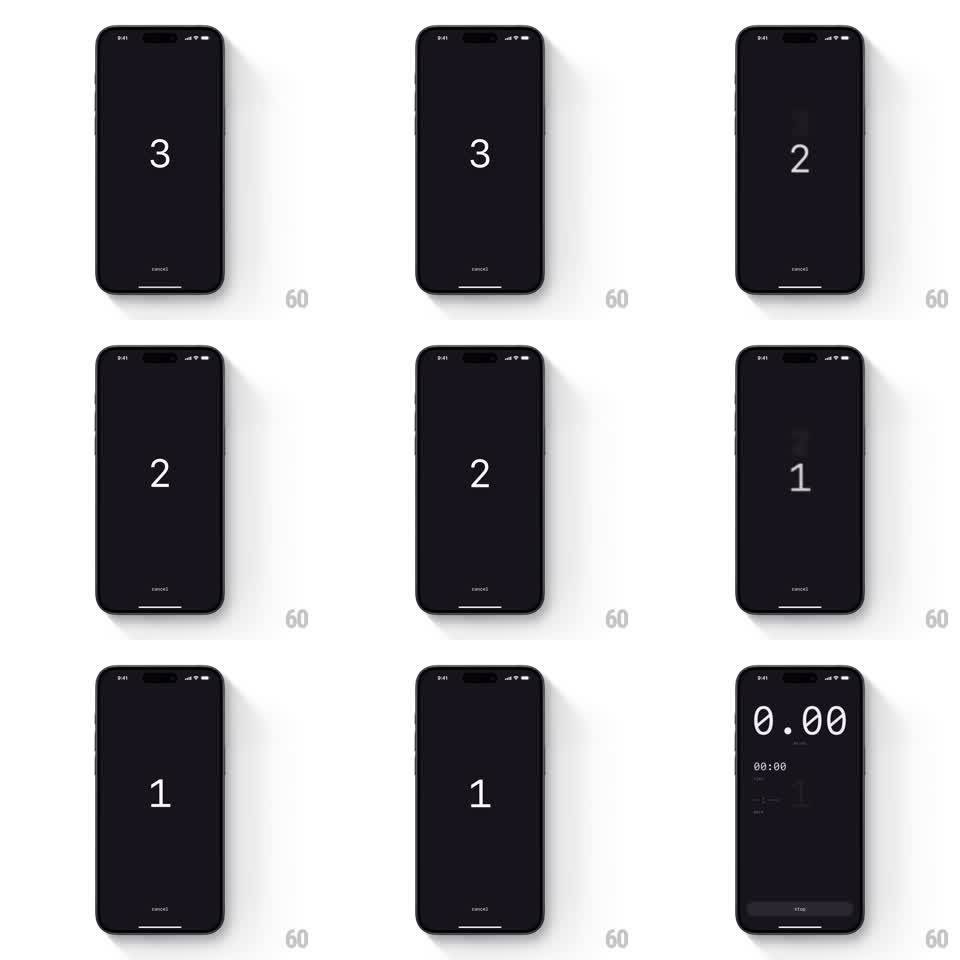

Media
Frame-by-frame

Rebuild this animation 1:1: Miles' countdown - giant numerals 3, 2, 1 flip through the center of a dark screen with a motion-blur slide, then give way to the live workout dashboard.

Rebuild this animation 1:1: Miles' countdown - giant numerals 3, 2, 1 flip through the center of a dark screen with a motion-blur slide, then give way to the live workout dashboard. ## Integration Integration: stack-agnostic spec - springs given as stiffness/damping, timed motions as duration + curve; map every value to your framework and animation library of choice. ## Scene A near-black screen with a small "cancel" label at the bottom. Huge thin white numerals count down at center: 3, 2, 1. Each digit slides out upward with a vertical motion blur as the next slides in from below. After 1, the dashboard fades in: the big "0.00" miles readout, a "00:00" timer, stat rows, and the STOP button at the bottom. ## Motion spec Pattern: flip countdown, 3s plus 500ms handoff. - Each numeral holds ~700ms, then exits upward (translate -60px, 250ms, ease-in) with a vertical blur that peaks mid-flight (8px) - the classic split-flap feel. - The next numeral enters from below (translate 60px to 0, 250ms, ease-out), blur resolving as it lands; outgoing and incoming overlap by 100ms. - After the 1 exits, the dashboard elements fade and rise in (300ms, ease-out): miles readout first, then timer and stats, STOP button last (100ms stagger). ## Calibration - The blur is what sells depth - sharp digits sliding would read flat. - Numerals are enormous and thin-weight, centered exactly. ## Reduced motion Digits crossfade; dashboard fades in. ## Don't miss - The exit and entrance share one vertical axis - numbers pass through the same slot. - "cancel" stays visible and static the whole countdown.